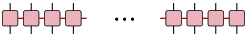
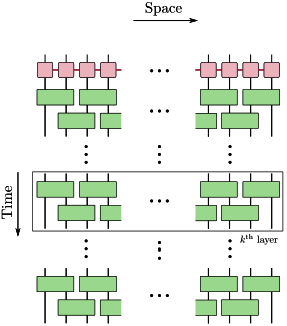

Unitary Compression
We present an example of disentangling an MPO. The dynamics of a quantum system can be approximated using an MPO (for instance: Trotter dynamics associated with Hamiltonian evolution).

Figure: Matrix Product Operators (MPOs) represent quantum operators with physical indices (denoted by black) and coherent correlations encoded by the χ-virtual indices (denoted by red).
Entropy based objective function
Such an MPO can be further compressed by disentangling it. Here we employ the entropy based objective function to disentangle and due to the non-unity of the norm in the MPO we restrict the scope of disentanglers to be a Riemannian disentangler with α-Rényi entropy as the objective function.

Figure: Brickwall layered unitary circuit to disentangle MPO (Update figure)
Riemannian disentanglers with α-Rényi entropy as the objective function: Disentanglers.benchmark_mpo_disentangler_opt
Disentanglers.benchmark_mpo_disentangler_opt — Function
benchmark_mpo_disentangler_opt(opt_function, r_mpo, nlayers, ro_opt, r_seed; kwargs...)Disentangling Matrix Product Operator (MPO) optimization layers using a specified optimization function (opt_function) and sweeping routines.
In the MPO land, we are restricted to using the Riemannian disentangler with α-Renyi entropy as the optimization function. This is due to MPOs having non-unity norms leading to entropy being ill-defined (negative) when other objective functions are employed.
Arguments
opt_function: The optimization routine used for disentangling two-site MPO tensors.r_mpo::MPO: The initial Matrix Product Operator to be optimized/disentangled.nlayers::Integer: The maximum number of sweeping layers to perform.ro_opt::Bool: Flag indicating whether Riemannian optimization (true) or standard methods (false) are used.r_seed::Integer: Random seed for the solver (mainly used for reproducibility).
Keyword Arguments
kwargs...: Additional keyword arguments passed directly toopt_functionor entropy calculations.
Returns
layers::Int: The actual number of layers executed before convergence or completion.sf_vn_ent_arr::Vector{Float64}: Von Neumann entropy values after updates.delta_vn_ent_arr::Vector{Float64}: Change in Von Neumann entropy before and after updates.delta_nsv_arr::Vector{Float64}: Change in the number of singular values.linkdims_arr::Vector{Float64}: Average link dimensions of the MPO per layer.time_arr::Vector{Float64}: Elapsed execution times for the optimization steps.
Examples
# setting renormalize flag to be true for entropy to be non-negative during the optimization process
flayers, final_sv_ent_arr, delta_vn_ent, delta_nsv, link_dims, time_arr = Disentanglers.benchmark_mpo_disentangler_opt(
isometry_ro_are, ham_evo_mpo, nlayers, true, seed; renormalize = true, opt = solver)Distance based objective function
MPOs can also be disentangled using distance based objective functions, like Normalized Frobenius Norm. That is, we couple the brickwall layered Riemannian disentanglers (as above) with the distance based objective function. For each application of the isometry we apply the isometry and minimize the associated trace norm of the updated MPO.
Riemannian disentanglers with normalized Frobenius norm as the objective function: Disentanglers.benchmark_mpo_distance_measure_opt
Disentanglers.benchmark_mpo_distance_measure_opt — Function
benchmark_mpo_distance_measure_opt(opt_function, r_mpo, nlayers, r_seed; kwargs...)Benchmarks an optimization routine for MPO distance measures (such as unitary overlap compression/disentangling) across multiple layers of a Matrix Product Operator (MPO). Sweeps through odd and even site pairs, applies the optimization function, updates the MPO via SVD, and tracks entanglement entropy changes, objective function values, link dimensions, and execution times.
Arguments
opt_function: The optimization function to apply per site-pair (e.g.,isometry_unitary_overlap).r_mpo: The target Matrix Product Operator (MPO) to be optimized/benchmarked.nlayers::Int: Maximum number of optimization layers to perform.r_seed::Int: Random seed for reproducibility.kwargs...: Additional keyword arguments passed down toopt_function.
Keyword Arguments
kwargs...: Additional keyword arguments passed directly toopt_function.
Returns
layers::Int: The actual number of layers executed before convergence or completion.sf_vn_ent_arr: Array of post-update von Neumann entanglement entropy values.delta_vn_ent_arr: Array of changes in von Neumann entanglement entropy (pre minus post update) per step.obj_func_val_arr: Array of final objective function values from each optimization step.linkdims_arr: Array tracking average link dimensions across layers.time_arr: Array of elapsed execution times recorded per site-pair optimization.
Examples
flayers, final_sv_ent_arr, delta_vn_ent, fobj_func_val_arr, link_dims, time_arr = Disentanglers.benchmark_mpo_distance_measure_opt(
isometry_unitary_overlap, ham_evo_mpo, nlayers, seed; opt=solver)